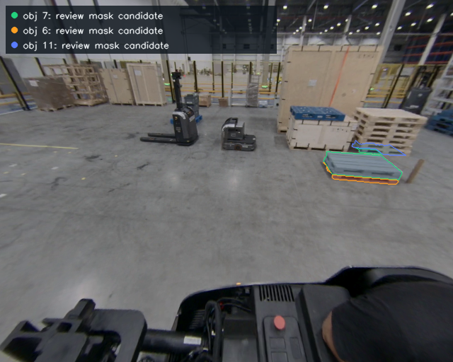
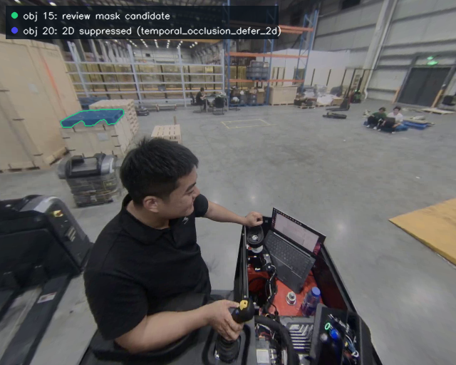

冻结复核场景
只读候选010 · camera0 · 1789899951882467655

LabelAgent / Pallet Visibility Review
LiDAR、3D 深度与时序证据汇总；仅供人工检查。


| 场景 | obj_id | 处理 | 掩码像素 | 传播源帧 | 状态 |
|---|---|---|---|---|---|
| 010 / camera0 | 7 | 输出候选掩码 | 3,360 | — | 必须复核 |
| 010 / camera0 | 6 | 输出候选掩码 | 666 | — | 必须复核 |
| 010 / camera0 | 11 | 输出候选掩码 | 693 | — | 必须复核 |
| 011 / camera1 | 15 | 输出候选掩码 | 1,503 | — | 必须复核 |
| 011 / camera1 | 20 | 抑制二维掩码 | 0 | 1789900388515701364、1789900390014812364、1789900390315797364 | 必须复核 |